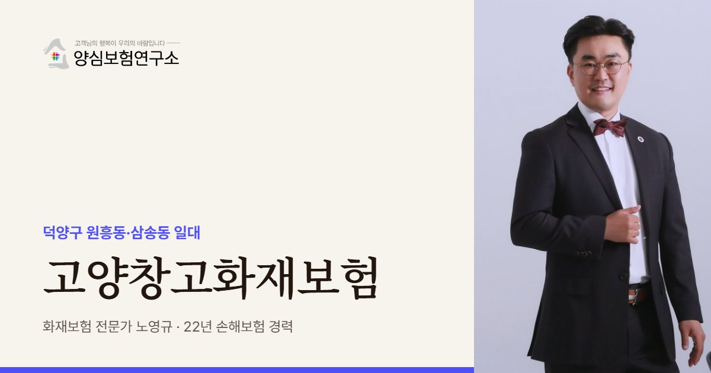

고양의 다층 센터는 한 건물에 여러 임차인이 층을 나눠 쓰는 경우가 많습니다. 노영규 대표는 내가 쓰는 층과 공용 램프, 하역장이 계약서상 누구 관리인지부터 확인합니다.
고양 안내
고양, 왜 창고화재보험이 중요할까요?
고양창고화재보험은 고양시 덕양구 원흥동·삼송동 일대 물류센터와 창고에 보관 중인 상품, 랙과 설비, 임차한 공간에 대한 배상책임을 화재에 대비해 묶어 두는 보험을 가리킵니다. 이 권역은 서울 은평·서대문·마포와 붙어 있어, 주문 당일이나 다음 날 서울 서북권으로 물건을 내보내는 도심 배송 거점 역할을 합니다.
원흥동에는 지하 1층, 지상 7층 규모에 대지만 약 5.6만㎡인 대형 물류센터가 자리하고 이커머스 업체가 임차해 쓰고 있습니다. 삼송동에서도 물류센터가 새로 지어졌습니다. 땅이 넓지 않은 도심 인접지라 옆으로 넓히기보다 위로 쌓는 다층 구조가 많습니다.
부동산 컨설팅사 보고서는 수도권 물류가 성숙기에 들어서면 고양, 성남, 시흥, 군포를 중심으로 한 네 권역으로 다시 짜일 것이라고 봤습니다. 서울 바로 옆이라는 입지가 앞으로도 고양 창고의 가치가 된다는 뜻입니다.
다층 센터는 층마다 임차인과 보관 품목이 다르고, 차량이 오르내리는 램프와 하역장을 함께 씁니다. 불이 한 층에서 시작돼도 연기와 소화수가 아래층 재고까지 망가뜨릴 수 있어, 내 층만이 아니라 건물 전체 구조를 알고 가입금액을 정해야 합니다.
2024.09 일산동구 설문동 물류복합센터 신축 공사장에서 불이 나 지하 1층을 태우고 약 4시간 반 만에 꺼졌습니다. 인명 피해는 없었습니다. (경기일보)
주요 위험
고양창고화재보험에서 먼저 볼 위험
층별로 나뉜 임차 재고
위층 불의 연기와 소화수가 아래층 상품을 망가뜨릴 수 있어 층 구조를 반영해 재고를 잡습니다.
공용 램프와 하역장
차량이 몰리는 공용 공간에서 난 불은 책임 주체가 흐려지기 쉬워 관리 구분을 미리 확인합니다.
당일 배송 중단
도심 배송은 하루만 멈춰도 주문이 밀리므로 복구 기간 동안의 대체 창고 비용을 따져 봅니다.
신축·증축 공사 단계
준공 전후 공사 중 화재는 기존 창고 보험과 공사 보험의 경계가 생기므로 시점별로 나눠 봅니다.
포장재 적치
상자와 완충재가 한꺼번에 쌓이는 출고 구역은 불이 빨리 번져 적치 위치를 정리해 둡니다.
주거지와 가까운 입지
주변 아파트와 상가로 연기 피해가 번지면 배상 문제가 생길 수 있어 배상책임 한도를 함께 봅니다.
※ 실제 보장 여부와 한도, 면책 사항은 가입하는 상품의 약관과 창고 현황에 따라 달라집니다.
방문 상담
고양 직접 방문 상담
원흥·삼송 센터는 층수와 램프 구조를 직접 봐야 정확한 설계가 됩니다. 덕양구 창고를 찾아가 임대차계약서와 층별 도면을 함께 확인합니다.
꼭 확인할 점검 항목
고양창고화재보험 점검 리스트
- 사용하는 층과 면적내가 임차한 층, 공용 공간, 전용 하역장을 도면에 표시해 둡니다.
- 위아래 층 임차인위층과 아래층에 어떤 짐이 있는지 알아 두면 번짐 위험을 가늠할 수 있습니다.
- 공사 일정증축이나 설비 교체 공사가 잡혀 있다면 공사 기간을 따로 알려야 합니다.
- 출고 피크 재고명절과 할인 행사 직전의 최대 재고를 기준으로 가입금액을 맞춥니다.
- 대체 창고 확보불이 났을 때 옮겨 쓸 수 있는 인근 창고가 있는지 미리 알아봅니다.
고객 후기
실제 계약고객 만족 사례


※ 실제 계약고객과 나눈 카카오톡 상담과 후기 일부이며, 개인정보는 가렸습니다.
지역 상담 Q&A
고양창고화재보험 Q&A
고양 다층 물류센터의 한 층만 빌려 써도 화재보험이 필요한가요?
필요합니다. 건물주 보험은 보통 건물만 대상으로 하고, 임차인의 상품과 랙, 건물주에 대한 배상책임은 임차인이 따로 준비해야 하기 때문입니다.
다른 층에서 난 불로 우리 재고가 젖었다면 보상 대상이 되나요?
내 창고화재보험에 소화수와 연기 피해가 포함돼 있다면 보상 대상이 될 수 있습니다. 약관의 손해 범위를 가입 전에 확인해 두는 것이 좋습니다.
삼송동에 새로 입주하는데 언제 가입하는 게 좋을까요?
짐을 들이는 날부터 보험이 시작되도록 잡는 것이 좋습니다. 입고 첫날부터 재고가 쌓이기 때문에 계약 시작일을 입고일에 맞추기를 권합니다.
서울 은평구 창고와 고양 창고를 함께 가입할 수 있나요?
소재지가 여러 곳이어도 한 계약에 묶는 방법을 검토할 수 있습니다. 창고별 주소와 보관 품목, 평균 재고를 알려 주시면 묶을지 나눌지 함께 판단합니다.